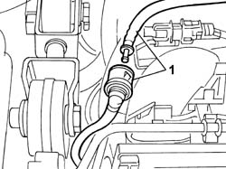
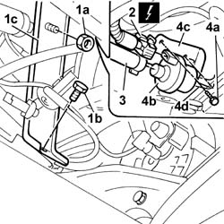
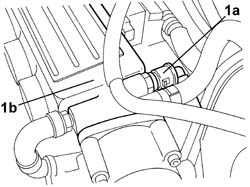
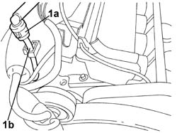
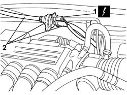
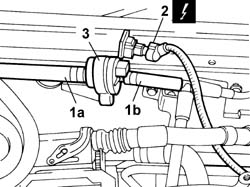

1080E28 enablement solenoid for flow of fuel vapours to inlet - r+r
- Path
- Procedures > 10 ENGINE > 1080 EMISSION CONTROL SYSTEM > 1080E EVAPORATION CONTROL SYSTEM > 1080E28 enablement solenoid for flow of fuel vapours to inlet - r+r
- Kind
- repair procedure (removal / refitting; the operation number is the code)
- Applies to
- engines: 2.0 TB, 2.4 20V, 3.0 V6, 3.2 V6; all production periods
- Interactive page
- https://sloeber94.github.io/elrnDB-lThss/en/#/75202
Applies to: engines: 2.4 20V; all production periods
 Removing
Removing
 Refitting
Refitting- Position the vehicle on the lift.
- Make sure that the ignition key is in the OFF position, then disconnect the negative battery terminal (-).
See in Op. 7040D50 ENGINE COMPARTMENT UPPER SOUND INSULATION SHIELD - R.R.
See in Op. 1016A40 Ignition COIL COVER on cylinder head - R.R.
1. Disconnect the rapid connector for the fuel vapour recovery pipe and release the pipe from the fastenings.

Applies to: engines: 2.4 20V; all production periods
- Raise the vehicle on the lift.
See in Op. 7055B54 PROTECTION/GUARD under engine - R.R.
See in Op. 1076B68 EXHAUST PIPE FLEXIBLE SECTION - R.R.
1. Undo the nut (1a) and the bolt (1b), then move the modular intake manifold mounting bracket (1c).
2. Disconnect the electrical connection from the fuel vapour enablement solenoid valve.
 | Description | Connector |
|---|---|---|
2 | Fuel vapour recovery solenoid valve | L010 |
3. Disconnect the supply pipe to the modular intake manifold from the solenoid valve.
4. Undo the bolts (4a) and remove the fuel vapour enablement solenoid valve (4b), complete with bracket (4c) and pipe (4d).

Applies to: engines: 2.4 20V; all production periods
Refitting
Removing- Positino the fuel vapour enablement solenoid valve in its housing, complete with bracket and pipe, and secure it using the bolts.
- Connect the supply pipe to the modular intake manifold to the solenoid valve.
- Connect the electrical connection for the fuel vapour enablement solenoid valve.
| Description | Connector |
|---|---|---|
. | Fuel vapour recovery solenoid valve | L010 |
- Position the modular intake manifold mounting bracket in its housing and secure it using the nut and the bolt.
See in Op. 1076B68 EXHAUST PIPE FLEXIBLE SECTION - R.R.
See in Op. 7055B54 PROTECTION/GUARD under engine - R.R.
- Lower the vehicle on the lift.
- Connect the rapid connector for the fuel vapour recovery pipe and fasten the pipe.
See in Op. 1016A40 Ignition COIL COVER on cylinder head - R.R.
See in Op. 7040D50 ENGINE COMPARTMENT UPPER SOUND INSULATION SHIELD - R.R.
- Connect the negative battery terminal.
- Remove the vehicle from the lift.
Applies to: engines: 3.0 V6, 3.2 V6; all production periods
Removing
Refitting- Position the vehicle on the lift.
- Make sure that the ignition key is in the OFF position, then disconnect the negative battery terminal (-).
See in Op. 7040D50 ENGINE COMPARTMENT UPPER SOUND INSULATION SHIELD - R.R.
1. Disconnect the rapid connector (1a) for the fuel vapour recovery pipe from the intake chamber (1b).

Applies to: engines: 3.0 V6, 3.2 V6; all production periods
1. Disconnect the rapid connector (1a) for the flexible section of the fuel vapour recovery pipe from the rigid section (1b).

Applies to: engines: 3.0 V6, 3.2 V6; all production periods
1. Disconnect the electrical connection from the fuel vapour enablement solenoid valve.
| Description | Connector |
|---|---|---|
1 | Fuel vapour recovery solenoid valve | L010 |
2. Remove the solenoid valve complete with flexible pipes.

Applies to: engines: 3.0 V6, 3.2 V6; all production periods
Refitting
Removing- Position the solenoid valve complete with flexible pipes.
- Connect the electrical connection from the fuel vapour enablement solenoid valve.
| Description | Connector |
|---|---|---|
. | Fuel vapour recovery solenoid valve | L010 |
- Connect the rapid connector for the flexible section of the fuel vapour recovery pipe to the rigid section.
- Connect the rapid connector for the fuel vapour recovery pipe to the intake chamber.
See in Op. 7040D50 ENGINE COMPARTMENT UPPER SOUND INSULATION SHIELD - R.R.
- Connect the negative battery terminal and position the cover on the left hand side of the luggage compartment.
- Remove the vehicle from the lift.
Applies to: engines: 2.0 TB; all production periods
Removing
Refitting- Position the vehicle on the lift.
- Make sure that the ignition key is in the OFF position, then open the boot, remove the cover on the left hand side and disconnect the negative battery lead.
See in Op. 7040D50 ENGINE COMPARTMENT UPPER SOUND INSULATION SHIELD - R.R.
1. Release the bands connecting the fuel vapour recovery solenoid valve to the inlet and outlet pipes (1a) and (1b).
2. Disconnect the electrical connection from the fuel vapour recovery solenoid valve.
| Description | Connector |
|---|---|---|
2 | Fuel vapour recovery solenoid valve | L010 |
3. Remove the flexible support from the bracket, then release the fuel vapour recovery solenoid valve.

Applies to: engines: 2.0 TB; all production periods
Refitting
Removing- Fit the fuel vapour recovery solenoid valve on the flexible support, then attach it to the bracket.
- Connect the electrical connection for the fuel vapour recovery solenoid valve.
| Description | Connector |
|---|---|---|
. | Fuel vapour recovery solenoid valve | L010 |
- Connect the inlet and outlet pipes fastening them using the bands.
See in Op. 7040D50 ENGINE COMPARTMENT UPPER SOUND INSULATION SHIELD - R.R.
- Connect the negative battery terminal, then close the boot.
- Remove the vehicle from the lift.
Topics linked from this page (4)
- 1016A40 Ignition COIL COVER on cylinder head - R.R.
- 1076B68 EXHAUST PIPE FLEXIBLE SECTION - R.R.
- 7040D50 ENGINE COMPARTMENT UPPER SOUND INSULATION SHIELD - R.R.
- 7055B54 PROTECTION/GUARD under engine - R.R.